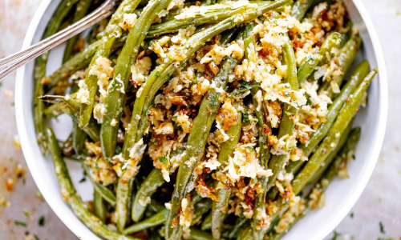

Garlic Parmesan Roasted Green Beans
Ingredients
- 1 pound green beans, washed and trimmed
- 1/2 cup unsalted butter, softened
- 6 large cloves of garlic, minced
- 1 tsp salt and 1 tsp fresh cracked black pepper, or to taste
- 1 Tbsp italian seasoning
- 3/4-1 cup grated parmesan
- Fresh chopped parsley, for garnish
Directions
- Preheat oven to 400 F.
- In a large bowl, combine fresh green beans with butter, garlic, parmesan, salt, pepper,
and italian seasoning and toss to combine.
- Spread the prepared green beans on a baking sheet. Roast the green beans for 15-20
minutes until crisp-tender, stirring halfway through.
- Remove parmesan green beans from the oven, transfer to a serving plate, garnish with fresh
chopped parsley and enjoy!
Notes
- To make your green beans more tender, you can pre-cook green beans in the microwave with
1 cup water for 5 minutes, then soak into ice-cold water before mixing with butter, garlic,
and parmesan.
- Parmesan is already salty, so go easy on salt at first, then taste and adjust seasoning to
your taste.
- If you like your green beans coated with extra crispy parmesan, add up to 1 cup of parmesan
to the mixture.